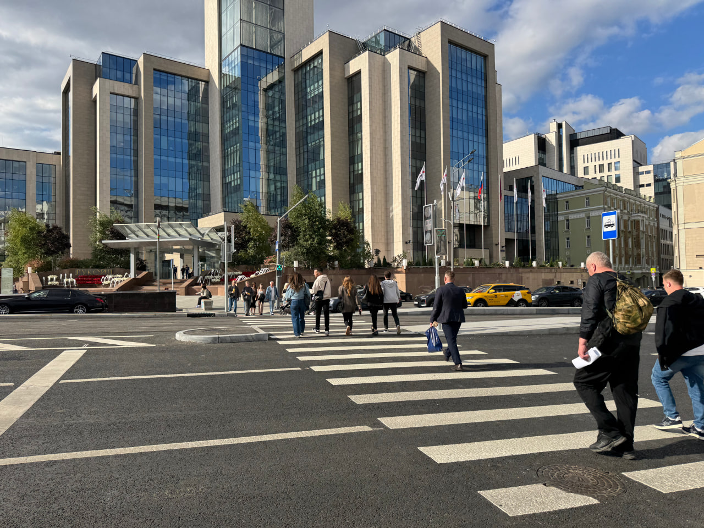
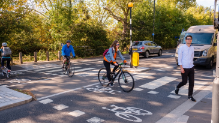

Ищем дизайнера
Если вы:
- можете уделить проекту около 12 часов
- умеете работать в Figma
- можете создавать в рамках существующего дизайна
- можете приступить в ближайшие 2 недели к задаче
Краткий текст о важности волонтёров в команде Краткий текст о важности волонтёров в команде Краткий текст о важности волонтёров в команде Краткий текст о важности волонтёров в команде Краткий текст о важности волонтёров в команде Краткий текст о важности волонтёров в команде Краткий текст о важности волонтёров в команде


Если вы хотите помочь чем-то иным, то можете связаться с нами: